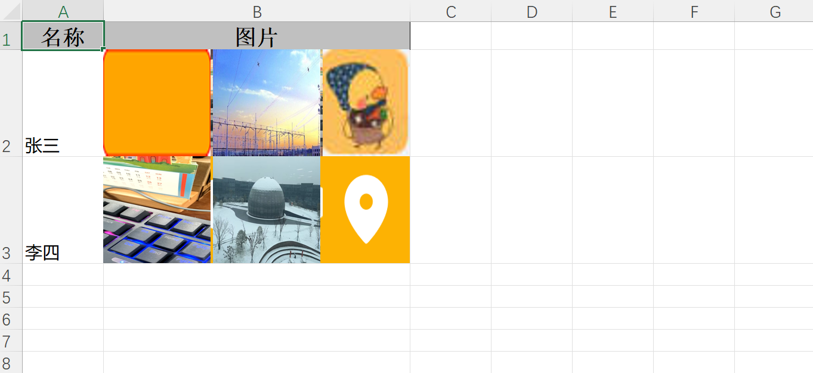
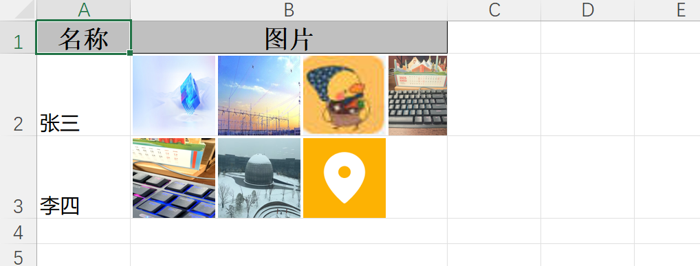

基于SpringBoot，使用EasyExcel导出图片功能
1、前言
项目中有导出excel文件需要包含图片的需求，使用EasyExcel注解方式支持导出，但是不够灵活，而且当导出的图片过多，过大会导致导出时间过长，excel文件过大。这个时候可以考虑先压缩图片，然后再导出，如果必须要导出原图那就没办法了，只能异步导出了。下面介绍一下导出的方案。
2、导出方案
2.1 使用easyExcel注解，配合自定义handler，实现一个单元格，导出多张图片。
导出实体VO：
import com.alibaba.excel.annotation.ExcelProperty;
import lombok.Data;
import java.util.List;
@Data
public class ExportVo {
@ExcelProperty(value = "名称",index = 0)
private String name;
@ExcelProperty(value = "图片",converter = ImageConvert.class,index = 1)
private List<String> signImages;
}
图片转换类：
package com.gotion.business.school.util;
import com.alibaba.excel.converters.Converter;
import com.alibaba.excel.enums.CellDataTypeEnum;
import com.alibaba.excel.metadata.GlobalConfiguration;
import com.alibaba.excel.metadata.data.ImageData;
import com.alibaba.excel.metadata.data.ReadCellData;
import com.alibaba.excel.metadata.data.WriteCellData;
import com.alibaba.excel.metadata.property.ExcelContentProperty;
import com.alibaba.excel.util.IoUtils;
import com.alibaba.excel.util.ListUtils;
import lombok.extern.slf4j.Slf4j;
import org.springframework.util.CollectionUtils;
import java.io.InputStream;
import java.net.URL;
import java.util.List;
@Slf4j
public class ImageConvert implements Converter<List<String>> {
@Override
public Class<?> supportJavaTypeKey() {
return List.class;
}
@Override
public CellDataTypeEnum supportExcelTypeKey() {
return CellDataTypeEnum.EMPTY;
}
@Override
public List<String> convertToJavaData(ReadCellData<?> cellData, ExcelContentProperty contentProperty, GlobalConfiguration globalConfiguration) throws Exception {
return null;
}
@Override
public WriteCellData<?> convertToExcelData(List<String> value, ExcelContentProperty contentProperty, GlobalConfiguration globalConfiguration) throws Exception {
// 这里进行对数据实体类URL集合处理
List<ImageData> data = ListUtils.newArrayList();
ImageData imageData;
// for 循环一次读取
for (String imageUrl : value) {
URL url = new URL(imageUrl);
try (InputStream inputStream = url.openStream()) {
byte[] bytes = IoUtils.toByteArray(inputStream);
imageData = new ImageData();
imageData.setImage(bytes);
data.add(imageData);
} catch (Exception e) {
log.error("导出临时记录图片异常：", e);
}
}
WriteCellData<?> cellData = new WriteCellData<>();
if (!CollectionUtils.isEmpty(data)) {
// 图片返回图片列表
cellData.setImageDataList(data);
cellData.setType(CellDataTypeEnum.EMPTY);
} else {
// 没有图片使用汉字表示
cellData.setStringValue("无图");
cellData.setType(CellDataTypeEnum.STRING);
}
return cellData;
}
}
自定义处理图片handler：
import com.alibaba.excel.enums.CellDataTypeEnum;
import com.alibaba.excel.metadata.Head;
import com.alibaba.excel.metadata.data.ImageData;
import com.alibaba.excel.metadata.data.WriteCellData;
import com.alibaba.excel.write.handler.CellWriteHandler;
import com.alibaba.excel.write.metadata.holder.WriteSheetHolder;
import com.alibaba.excel.write.metadata.holder.WriteTableHolder;
import org.apache.poi.ss.usermodel.*;
import org.apache.poi.ss.usermodel.ClientAnchor.AnchorType;
import org.apache.poi.util.Units;
import org.apache.poi.xssf.usermodel.XSSFDrawing;
import org.apache.poi.xssf.usermodel.XSSFPicture;
import org.apache.poi.xssf.usermodel.XSSFShape;
import org.slf4j.Logger;
import org.slf4j.LoggerFactory;
import org.springframework.util.CollectionUtils;
import java.util.List;
import java.util.concurrent.CopyOnWriteArrayList;
public class CustomImageModifyHandler implements CellWriteHandler {
private static final Logger log = LoggerFactory.getLogger(CustomImageModifyHandler.class);
private final CopyOnWriteArrayList<String> processedCells = new CopyOnWriteArrayList<>();
private static final int DEFAULT_IMAGE_WIDTH_PX = 60;
private static final int DEFAULT_IMAGE_HEIGHT_PX = 60;
private static final int IMAGE_SPACING_PX = 2;
private static final double POINTS_PER_PIXEL = 72.0 / 96.0;
private static final double PIXELS_PER_CHAR = 8.0;
private final int imageWidthPx;
private final int imageHeightPx;
public CustomImageModifyHandler() {
this(DEFAULT_IMAGE_WIDTH_PX, DEFAULT_IMAGE_HEIGHT_PX);
}
public CustomImageModifyHandler(int imageWidthPx, int imageHeightPx) {
this.imageWidthPx = Math.max(1, imageWidthPx);
this.imageHeightPx = Math.max(1, imageHeightPx);
}
@Override
public void afterCellDataConverted(WriteSheetHolder writeSheetHolder, WriteTableHolder writeTableHolder,
WriteCellData<?> cellData, Cell cell, Head head,
Integer relativeRowIndex, Boolean isHead) {
if (isHead || CollectionUtils.isEmpty(cellData.getImageDataList())) {
return;
}
cellData.setType(CellDataTypeEnum.EMPTY);
}
@Override
public void afterCellDispose(WriteSheetHolder writeSheetHolder, WriteTableHolder writeTableHolder,
List<WriteCellData<?>> cellDataList, Cell cell,
Head head, Integer relativeRowIndex, Boolean isHead) {
if (isHead || CollectionUtils.isEmpty(cellDataList)) {
return;
}
WriteCellData<?> cellData = cellDataList.get(0);
List<ImageData> imageDataList = cellData.getImageDataList();
if (CollectionUtils.isEmpty(imageDataList)) {
return;
}
String cellKey = cell.getRowIndex() + "_" + cell.getColumnIndex();
if (processedCells.contains(cellKey)) {
return;
}
processedCells.add(cellKey);
Sheet sheet = cell.getSheet();
Workbook workbook = sheet.getWorkbook();
int colIndex = cell.getColumnIndex();
int rowIndex = cell.getRowIndex();
try {
setOptimalRowHeight(sheet, rowIndex);
setOptimalColumnWidth(sheet, colIndex, imageDataList.size());
insertAllImages(workbook, sheet, cell, imageDataList);
cell.setCellValue("");
//removeEasyExcelAutoPictures(sheet);
} catch (Exception e) {
log.error("处理图片失败: row={}, col={}", rowIndex, colIndex, e);
}
}
/**
* 关键方法：删除EasyExcel自动插入的所有图片
*/
private void removeEasyExcelAutoPictures(Sheet sheet) {
Drawing<?> drawing = sheet.getDrawingPatriarch();
if (drawing instanceof XSSFDrawing) {
XSSFDrawing xssfDrawing = (XSSFDrawing) drawing;
if (xssfDrawing != null) {
// 获取所有图片形状
List<XSSFShape> shapes = xssfDrawing.getShapes();
// 倒序遍历并删除（避免并发修改异常）
for (int i = shapes.size() - 1; i >= 0; i--) {
XSSFShape shape = shapes.get(i);
if (shape instanceof XSSFPicture) {
XSSFPicture picture = (XSSFPicture) shape;
picture.resize(0);
}
}
}
}
}
private void setOptimalRowHeight(Sheet sheet, int rowIndex) {
Row row = sheet.getRow(rowIndex);
if (row == null) row = sheet.createRow(rowIndex);
double heightInPoints = imageHeightPx * POINTS_PER_PIXEL;
row.setHeightInPoints((float) heightInPoints);
}
private void setOptimalColumnWidth(Sheet sheet, int columnIndex, int imageCount) {
double totalWidthPx = imageWidthPx * imageCount + IMAGE_SPACING_PX * (imageCount - 1);
double widthInChars = totalWidthPx / PIXELS_PER_CHAR;
int columnWidth = (int) (widthInChars * 256);
columnWidth = Math.max(columnWidth, 6_000); // 至少 6000
sheet.setColumnWidth(columnIndex, columnWidth);
}
// ==================== 删除原图 + 插入新图 ====================
private void insertAllImages(Workbook workbook, Sheet sheet, Cell cell, List<ImageData> imageDataList) {
Drawing<?> drawing = sheet.getDrawingPatriarch();
if (drawing == null) {
drawing = sheet.createDrawingPatriarch();
}
int colIndex = cell.getColumnIndex();
int rowIndex = cell.getRowIndex();
// ✅ 插入新图片
for (int i = 0; i < imageDataList.size(); i++) {
ImageData imageData = imageDataList.get(i);
if (imageData == null || imageData.getImage() == null) continue;
try {
int pictureType = detectPictureType(imageData.getImage());
int pictureIndex = workbook.addPicture(imageData.getImage(), pictureType);
insertSingleImage(drawing, workbook, colIndex, rowIndex, pictureIndex, i, imageDataList.size());
} catch (Exception e) {
log.warn("插入图片失败: {}", e.getMessage());
}
}
}
/**
* 插入单图
*/
private void insertSingleImage(Drawing<?> drawing, Workbook workbook, int colIndex, int rowIndex,
int pictureIndex, int imageIndex, int totalImages) {
CreationHelper helper = workbook.getCreationHelper();
ClientAnchor anchor = helper.createClientAnchor();
int startPx = imageIndex * (imageWidthPx + IMAGE_SPACING_PX);
int endPx = startPx + imageWidthPx;
anchor.setDx1(Units.pixelToEMU(startPx));
anchor.setDx2(Units.pixelToEMU(endPx));
anchor.setDy1(Units.pixelToEMU(0));
anchor.setDy2(Units.pixelToEMU(imageHeightPx));
anchor.setCol1(colIndex);
anchor.setCol2(colIndex);
anchor.setRow1(rowIndex);
anchor.setRow2(rowIndex);
anchor.setAnchorType(AnchorType.MOVE_AND_RESIZE);
drawing.createPicture(anchor, pictureIndex);
}
/**
* 检测图片类型
*/
private int detectPictureType(byte[] data) {
if (data.length > 2) {
if ((data[0] & 0xFF) == 0xFF && (data[1] & 0xFF) == 0xD8) {
return Workbook.PICTURE_TYPE_JPEG;
} else if (data[0] == 'W' && data[1] == 'M' && data[2] == 'F') {
return Workbook.PICTURE_TYPE_WMF;
} else if (data[0] == (byte) 0x89 && data[1] == 'P' && data[2] == 'N') {
return Workbook.PICTURE_TYPE_PNG;
}
}
return Workbook.PICTURE_TYPE_PNG;
}
// 其他方法留空
@Override public void beforeCellCreate(WriteSheetHolder writeSheetHolder, WriteTableHolder writeTableHolder, Row row, Head head, Integer columnIndex, Integer relativeRowIndex, Boolean isHead) {}
@Override public void afterCellCreate(WriteSheetHolder writeSheetHolder, WriteTableHolder writeTableHolder, Cell cell, Head head, Integer relativeRowIndex, Boolean isHead) {}
}
测试导出：
import com.alibaba.excel.EasyExcel;
import com.alibaba.excel.ExcelWriter;
import com.alibaba.excel.write.metadata.WriteSheet;
import com.google.common.base.Stopwatch;
import java.util.ArrayList;
import java.util.List;
public class TestExport {
public static void main(String[] args) {
Stopwatch stopwatch = Stopwatch.createStarted();
System.out.println("开始时间：" + stopwatch.elapsed());
ExportVo exportVo = new ExportVo();
exportVo.setName("张三");
exportVo.setSignImages(List.of("https://mom.gotion.com.cn:9199/oatest-minio/school-oa/bbs/2025/08/08/chart_20250808141512A001.png", "https://mom.gotion.com.cn:9199/oatest-minio/school-oa/bbs/2025/08/08/1_20250808143309A006.JPEG",
"https://mom.gotion.com.cn:9199/oatest-minio/school-oa/bbs/2025/08/13/touxiang_20250813203853A009.jpg","https://mom.gotion.com.cn:9199/oatest-minio/school-oa/bbs/2025/08/14/7e2c5ca66699934eb4991db8fb9e5c32_origin(1)_20250814170814A004.jpg"));
ExportVo exportVo2 = new ExportVo();
exportVo2.setName("李四");
exportVo2.setSignImages(List.of("https://mom.gotion.com.cn:9199/oatest-minio/school-oa/bbs/2025/08/14/tmp_3783a8a1124b11c5d87fc525636a1249458fb04850517a40_20250814141318A005.jpg", "https://mom.gotion.com.cn:9199/oatest-minio/school-oa/bbs/2025/08/13/a3f5dd3c-dd99-468c-bc37-a785961a6bac_20250813191852A006.jpg",
"https://mom.gotion.com.cn:9199/oatest-minio/school-oa/bbs/2025/08/13/4c164be45de6c822ba9ccc5d0bcacbc8_20250813202916A004.png"));
List<ExportVo> list = new ArrayList<>();
list.add(exportVo);
list.add(exportVo2);
//将Excel文件写入本地文件系统
String fileName = "测试导出数据.xlsx";
try (ExcelWriter excelWriter = EasyExcel.write(fileName, ExportVo.class)
.autoCloseStream(false)
.registerWriteHandler(new CustomImageModifyHandler(90,90)) // 添加处理器
.build()) {
WriteSheet writeSheet = EasyExcel.writerSheet("测试数据").build();
excelWriter.write(list, writeSheet);
System.out.println("Excel文件已成功保存到: " + fileName);
} catch (Exception e) {
System.err.println("导出Excel文件时发生错误: " + e.getMessage());
e.printStackTrace();
}
System.out.println("耗时："+stopwatch.elapsed().toMillis());
}
}
效果：

缺点：图片多，导出时间长，文件大小比较大。如何只是导出少量图片，这种方法可以满足需求。
2.2 不用注解，使用自定义handler处理图片位置并写入，同时可以加入图片压缩的逻辑，这样比较灵活。
导出实体VO：
import com.alibaba.excel.annotation.ExcelIgnoreUnannotated;
import com.alibaba.excel.annotation.ExcelProperty;
import lombok.AllArgsConstructor;
import lombok.Data;
import lombok.RequiredArgsConstructor;
import java.util.List;
@RequiredArgsConstructor
@AllArgsConstructor
@Data
@ExcelIgnoreUnannotated
public class MyData {
@ExcelProperty(value = "名称",index = 0)
private String name;
@ExcelProperty(value = "图片",index = 1)
private String picture;
private List<String> signImages;
// ✅ 改为 List<byte[]> 存多张图片
private List<byte[]> imageList;
public List<byte[]> getImageList() {
return ImageUrlConverter.convertUrlListToByteArrayAsync(signImages);
}
}
下载图片，并支持压缩功能：
package com.gotion.business.school.util;
import lombok.extern.slf4j.Slf4j;
import net.coobird.thumbnailator.Thumbnails;
import javax.imageio.ImageIO;
import java.awt.image.BufferedImage;
import java.io.*;
import java.net.HttpURLConnection;
import java.net.URL;
import java.util.ArrayList;
import java.util.Collections;
import java.util.List;
import java.util.concurrent.ExecutorService;
import java.util.concurrent.Executors;
import java.util.concurrent.Future;
import java.util.concurrent.TimeUnit;
/**
* 将图片 URL 列表转换为 byte[] 列表
* 支持 HTTP/HTTPS，带超时和异常处理
*/
@Slf4j
public class ImageUrlConverter {
private static final int TIMEOUT_MS = 10000; // 10秒超时
private static final String[] VALID_IMAGE_HEADERS = {"image/", "application/octet-stream"};
private static final int COMPRESS_MAX_WIDTH = 1920; // 增加宽度 1024
private static final int COMPRESS_MAX_HEIGHT = 1080; // 增加高度 768
private static final long TARGET_SIZE_BYTES = 204_800; // ≈200 KB
private static final float MIN_QUALITY = 0.5f; // 设置最低质量限制
private static final float QUALITY_STEP = 0.05f; // 每次减少0.05
// 500kb
private static final long MAX_IMAGE_SIZE = 307_200;
// 默认线程池
private static final ExecutorService DEFAULT_EXECUTOR = Executors.newFixedThreadPool(5);
/**
* 将图片 URL 列表转换为 byte[] 列表
*
* @param signImages 图片 URL 列表
* @return List<byte[]>，失败的 URL 返回 null，保持索引一致
*/
public static List<byte[]> convertUrlListToByteArray(List<String> signImages) {
if (signImages == null || signImages.isEmpty()) {
return new ArrayList<>();
}
List<byte[]> imageList = new ArrayList<>();
for (String imageUrl : signImages) {
//byte[] imageBytes = downloadImageAsBytes(imageUrl);
byte[] imageBytes = downloadAndProcessImage(imageUrl);
imageList.add(imageBytes); // 失败时 add(null)
}
return imageList;
}
/**
* 下载并处理单个图片（判断大小后决定是否压缩）
*
* @param imageUrl 图片 URL
* @return 图片字节数组，失败返回 null
*/
private static byte[] downloadAndProcessImage(String imageUrl) {
byte[] imageData = downloadImageAsBytes(imageUrl);
if (imageData == null) {
return null;
}
// 如果图片小于500KB，直接返回
if (imageData.length <= MAX_IMAGE_SIZE) {
System.out.printf("✅ 图片大小 %d KB，无需压缩%n", imageData.length / 1024);
return imageData;
} else {
System.out.printf("⚠️ 图片大小 %d KB，需要压缩%n", imageData.length / 1024);
return createThumbnail(imageData);
}
}
/**
* 使用 Thumbnailator 生成压缩缩略图字节数组
*/
private static byte[] createThumbnail(byte[] originalImageBytes) {
ByteArrayInputStream bis = null;
ByteArrayOutputStream baos = null;
try {
bis = new ByteArrayInputStream(originalImageBytes);
BufferedImage originalImage = ImageIO.read(bis);
if (originalImage == null) {
System.err.println("❌ 无法读取图片格式，跳过压缩");
return originalImageBytes; // 不支持的格式（如 ICO、WebP 等）
}
// 获取原始尺寸
int width = originalImage.getWidth();
int height = originalImage.getHeight();
// ✅ 保持宽高比，缩放到最大尺寸内
double ratio = Math.min(
(double) COMPRESS_MAX_WIDTH / width,
(double) COMPRESS_MAX_HEIGHT / height
);
int scaledWidth = (int) (width * ratio);
int scaledHeight = (int) (height * ratio);
// 确保至少 50x50
scaledWidth = Math.max(scaledWidth, 60);
scaledHeight = Math.max(scaledHeight, 60);
System.out.printf("原图 %dx%d → 缩放至 %dx%d%n", width, height, scaledWidth, scaledHeight);
float quality = 0.9f; // 初始质量 80%
byte[] result = null;
while (quality >= MIN_QUALITY) {
baos = new ByteArrayOutputStream();
Thumbnails.of(originalImage)
.size(scaledWidth, scaledHeight)
.outputFormat("jpg")
.outputQuality(quality)
.toOutputStream(baos);
result = baos.toByteArray();
long sizeInKB = result.length / 1024;
System.out.printf("尝试质量 %.2f → 输出大小: %d KB%n", quality, sizeInKB);
// 如果压缩后 ≤ 300KB，接受结果
if (result.length <= TARGET_SIZE_BYTES) {
System.out.printf("✅ 压缩成功: %d KB, 质量=%.2f%n", sizeInKB, quality);
return result;
}
quality -= QUALITY_STEP; // 减少质量
}
// 即使最低质量仍大于 300KB，返回最接近的结果
long finalSizeKB = result.length / 1024;
if (finalSizeKB > 500) {
System.out.printf("⚠️ 无法压缩到 300KB 以内，最终大小: %d KB%n", finalSizeKB);
} else {
System.out.printf("🟡 接近目标: %d KB%n", finalSizeKB);
}
return result;
} catch (IOException e) {
System.err.println("❌ 图片压缩失败: " + e.getMessage());
log.error("图片压缩失败", e);
return originalImageBytes; // 失败则返回原图
} finally {
try {
if (bis != null) bis.close();
} catch (IOException ignored) {}
try {
if (baos != null) baos.close();
} catch (IOException ignored) {}
}
}
/**
* 下载单个图片为 byte[]
*
* @param imageUrl 图片 URL
* @return 图片字节数组，失败返回 null
*/
private static byte[] downloadImageAsBytes(String imageUrl) {
if (imageUrl == null || imageUrl.trim().isEmpty()) {
System.err.println("❌ 空的图片 URL");
return null;
}
imageUrl = imageUrl.trim();
// 补全协议（如果缺失）
if (!imageUrl.startsWith("http://") && !imageUrl.startsWith("https://")) {
imageUrl = "https://" + imageUrl;
}
InputStream inputStream = null;
ByteArrayOutputStream buffer = null;
HttpURLConnection connection = null;
try {
URL url = new URL(imageUrl);
connection = (HttpURLConnection) url.openConnection();
connection.setRequestMethod("GET");
connection.setConnectTimeout(TIMEOUT_MS);
connection.setReadTimeout(TIMEOUT_MS);
connection.setInstanceFollowRedirects(true); // 支持重定向
// 设置 User-Agent（防止被屏蔽）
connection.setRequestProperty("User-Agent", "Mozilla/5.0 (Windows NT 10.0; Win64; x64) AppleWebKit/537.36");
int responseCode = connection.getResponseCode();
if (responseCode != 200) {
System.err.println("❌ HTTP " + responseCode + " - 无法下载图片: " + imageUrl);
return null;
}
// 验证 Content-Type 是否为图片
String contentType = connection.getContentType();
if (!isImageContentType(contentType)) {
System.err.println("⚠️ 非图片类型 (" + contentType + "): " + imageUrl);
// 有些服务器不返回正确类型，所以不直接返回 null
}
inputStream = connection.getInputStream();
buffer = new ByteArrayOutputStream();
byte[] tempBuffer = new byte[1024];
int bytesRead;
while ((bytesRead = inputStream.read(tempBuffer)) != -1) {
buffer.write(tempBuffer, 0, bytesRead);
}
byte[] imageData = buffer.toByteArray();
if (imageData.length == 0) {
System.err.println("❌ 下载的图片为空: " + imageUrl);
return null;
}
System.out.println("✅ 成功下载图片: " + imageUrl + " (" + imageData.length / 1024 + " KB)");
return imageData;
} catch (IOException e) {
System.err.println("❌ 下载图片失败: " + imageUrl + " | " + e.getMessage());
return null;
} finally {
closeQuietly(inputStream);
closeQuietly(buffer);
if (connection != null) {
connection.disconnect();
}
}
}
/**
* 判断 Content-Type 是否为图片类型
*/
private static boolean isImageContentType(String contentType) {
if (contentType == null) return false;
for (String header : VALID_IMAGE_HEADERS) {
if (contentType.toLowerCase().startsWith(header)) {
return true;
}
}
return false;
}
/**
* 安全关闭 Closeable 资源
*/
private static void closeQuietly(Closeable closeable) {
if (closeable != null) {
try {
closeable.close();
} catch (IOException e) {
// 忽略
}
}
}
public static List<byte[]> convertUrlListToByteArrayAsync(List<String> signImages) {
if (signImages == null || signImages.isEmpty()) return new ArrayList<>();
int size = signImages.size();
List<byte[]> results = new ArrayList<>(Collections.nCopies(size, null));
ExecutorService executor = Executors.newFixedThreadPool(
Math.min(size, 10));
try {
List<Future<?>> futures = new ArrayList<>();
for (int i = 0; i < size; i++) {
final int index = i;
Future<?> future = executor.submit(() -> {
byte[] data = downloadAndProcessImage(signImages.get(index));
results.set(index, data);
});
futures.add(future);
}
// 等待完成
for (Future<?> f : futures) {
try {
f.get(10, TimeUnit.SECONDS); // ✅ 加超时，避免卡死
} catch (Exception e) {
int idx = futures.indexOf(f);
results.set(idx, null); // 标记失败
}
}
}finally {
executor.shutdown();
}
return results;
}
}
自定义handler：
import com.alibaba.excel.metadata.Head;
import com.alibaba.excel.metadata.data.WriteCellData;
import com.alibaba.excel.write.handler.CellWriteHandler;
import com.alibaba.excel.write.metadata.holder.WriteSheetHolder;
import com.alibaba.excel.write.metadata.holder.WriteTableHolder;
import lombok.extern.slf4j.Slf4j;
import org.apache.poi.ss.usermodel.*;
import org.apache.poi.util.Units;
import java.util.*;
@Slf4j
public class ThumbnailWriteHandler implements CellWriteHandler {
private final Map<String, List<byte[]>> imageDataMap = new HashMap<>();
private int imageColumnIndex = 1; // 图片所在列索引
private static final int DEFAULT_IMAGE_WIDTH_PX = 60;
private static final int DEFAULT_IMAGE_HEIGHT_PX = 60;
private static final int IMAGE_SPACING_PX = 2;
private static final double POINTS_PER_PIXEL = 72.0 / 96.0;
private static final double PIXELS_PER_CHAR = 8.0;
private int maxImageCount = 0; // 记录所有行中最多的图片数量
private boolean columnWidthSet = false; // 标记列宽是否已设置
private final int imageWidthPx;
private final int imageHeightPx;
public ThumbnailWriteHandler() {
this(DEFAULT_IMAGE_WIDTH_PX, DEFAULT_IMAGE_HEIGHT_PX);
}
public ThumbnailWriteHandler(int imageWidthPx, int imageHeightPx) {
this.imageWidthPx = imageWidthPx;
this.imageHeightPx = imageHeightPx;
}
public ThumbnailWriteHandler(int imageWidthPx, int imageHeightPx, int imageColumnIndex) {
this.imageWidthPx = imageWidthPx;
this.imageHeightPx = imageHeightPx;
this.imageColumnIndex = imageColumnIndex;
}
// 外部传入数据：rowIndex -> 图片列表
public void setImageData(Map<Integer, List<byte[]>> data) {
this.imageDataMap.clear();
maxImageCount = 0; // 重置
for (Map.Entry<Integer, List<byte[]>> entry : data.entrySet()) {
List<byte[]> images = entry.getValue();
if (images != null && !images.isEmpty()) {
maxImageCount = Math.max(maxImageCount, images.size());
}
this.imageDataMap.put("row_" + entry.getKey(), images);
}
}
@Override
public void afterCellDispose(WriteSheetHolder writeSheetHolder, WriteTableHolder writeTableHolder,
List<WriteCellData<?>> cellDataList, Cell cell,
Head head, Integer relativeRowIndex, Boolean isHead) {
if (isHead || cell == null) return;
Sheet sheet = cell.getSheet();
Workbook workbook = sheet.getWorkbook();
int colIndex = cell.getColumnIndex();
int rowIndex = cell.getRowIndex();
// 假设第 2 列（index=1）是你要插入缩略图的位置
if (colIndex == imageColumnIndex) {
List<byte[]> images = imageDataMap.get("row_" + rowIndex);
if (images != null && !images.isEmpty()) {
setOptimalRowHeight(sheet, rowIndex);
// ✅ 只设置一次列宽
if (!columnWidthSet) {
setOptimalColumnWidth(sheet, colIndex);
columnWidthSet = true;
}
insertThumbnails(workbook, sheet, cell, images);
}
}
}
private void setOptimalRowHeight(Sheet sheet, int rowIndex) {
Row row = sheet.getRow(rowIndex);
if (row == null) row = sheet.createRow(rowIndex);
double heightInPoints = imageHeightPx * POINTS_PER_PIXEL;
row.setHeightInPoints((float) heightInPoints);
}
private void setOptimalColumnWidth(Sheet sheet, int columnIndex) {
//double totalWidthPx = imageWidthPx * imageCount + IMAGE_SPACING_PX * (imageCount - 1);
double totalWidthPx = imageWidthPx * maxImageCount + IMAGE_SPACING_PX * (maxImageCount - 1);
double widthInChars = totalWidthPx / PIXELS_PER_CHAR;
int columnWidth = (int) (widthInChars * 256);
columnWidth = Math.max(columnWidth, 6_000); // 至少 6000
sheet.setColumnWidth(columnIndex, columnWidth);
}
private void insertThumbnails(Workbook workbook, Sheet sheet, Cell cell,
List<byte[]> imageBytesList) {
Drawing<?> drawing = sheet.getDrawingPatriarch();
if (drawing == null) {
drawing = sheet.createDrawingPatriarch();
}
int colIndex = cell.getColumnIndex();
int rowIndex = cell.getRowIndex();
int thumbWidth = imageWidthPx; // 使用构造函数传入的宽度
int margin = IMAGE_SPACING_PX; // 使用类常量
int xOffset = margin; // 所有图片从左侧 margin 开始
//Set<String> added = new HashSet<>();
for (byte[] imageBytes : imageBytesList) {
if (imageBytes == null || imageBytes.length == 0) continue;
// ✅ 可选：关闭去重（如果你确认图片不同但仍被跳过）
// String hash = DigestUtils.md5Hex(imageBytes);
// if (added.contains(hash)) continue;
try {
// byte[] imageToInsert;
//
// // ✅ 判断：只有大于 1MB 才压缩
// if (imageBytes.length > MAX_IMAGE_SIZE) { // 1MB = 1,000,000 字节
// //System.out.println("压缩图片: " + imageBytes.length + " bytes -> " + imageWidthPx + "x" + imageHeightPx);
// // imageToInsert = createThumbnail2(imageBytes, imageWidthPx, imageHeightPx);
// imageToInsert = createThumbnailByThumbnailator(imageBytes);
// } else {
// System.out.println("小图不压缩，直接插入: " + imageBytes.length + " bytes");
// imageToInsert = imageBytes; // 直接使用原图
// }
//
// int pictureType = determinePictureType(imageToInsert);
// int pictureIdx = workbook.addPicture(imageToInsert, pictureType);
int pictureType = determinePictureType(imageBytes);
int pictureIdx = workbook.addPicture(imageBytes, pictureType);
ClientAnchor anchor = drawing.createAnchor(0, 0, 0, 0, colIndex, rowIndex, colIndex, rowIndex);
anchor.setDx1(Units.pixelToEMU(xOffset));
anchor.setDy1(Units.pixelToEMU(margin));
anchor.setDx2(Units.pixelToEMU(xOffset + thumbWidth));
anchor.setDy2(Units.pixelToEMU(margin + imageHeightPx));
anchor.setAnchorType(ClientAnchor.AnchorType.MOVE_AND_RESIZE);
drawing.createPicture(anchor, pictureIdx);
// added.add(hash); // ✅ 如果关闭去重，注释这行
// 只更新 x 偏移，y 不变（同一行）
xOffset += thumbWidth + margin;
} catch (Exception e) {
System.err.println("插入缩略图失败: " + e.getMessage());
}
}
}
private int determinePictureType(byte[] data) {
if (data == null || data.length < 3) {
return Workbook.PICTURE_TYPE_DIB;
}
// JPEG
if ((data[0] & 0xFF) == 0xFF && (data[1] & 0xFF) == 0xD8) {
return Workbook.PICTURE_TYPE_JPEG;
}
// WMF
if (data[0] == 'W' && data[1] == 'M' && data[2] == 'F') {
return Workbook.PICTURE_TYPE_WMF;
}
// PNG
if (data.length >= 8 &&
data[0] == (byte) 0x89 && data[1] == 'P' && data[2] == 'N' && data[3] == 'G' &&
data[4] == 0x0D && data[5] == 0x0A && data[6] == 0x1A && data[7] == 0x0A) {
return Workbook.PICTURE_TYPE_PNG;
}
// EMF (更准确的检测)
if (data.length >= 4) {
// EMF文件以EMF元文件头开始
if (data[0] == 0x01 && data[1] == 0x00 && data[2] == 0x00 && data[3] == 0x00) {
return Workbook.PICTURE_TYPE_EMF;
}
// 或者检查" EMF"签名（在某些EMF文件中存在）
if (data.length >= 8 &&
data[0] == 0x20 && data[1] == 0x45 && data[2] == 0x4D && data[3] == 0x46) {
return Workbook.PICTURE_TYPE_EMF;
}
}
// BMP/DIB
if (data[0] == 'B' && data[1] == 'M') {
return Workbook.PICTURE_TYPE_DIB;
}
// 默认返回DIB
return Workbook.PICTURE_TYPE_DIB;
}
}
数据测试：
import cn.hutool.core.date.StopWatch;
import com.alibaba.excel.EasyExcel;
import java.util.ArrayList;
import java.util.HashMap;
import java.util.List;
import java.util.Map;
public class TestMyData {
public static void main(String[] args) {
StopWatch stopWatch = new StopWatch("多缩略图测试");
stopWatch.start();
MyData myData = new MyData();
myData.setName("张三");
myData.setSignImages(List.of("https://mom.gotion.com.cn:9199/oatest-minio/school-oa/bbs/2025/08/13/banner_20250813202603A007.png", "https://mom.gotion.com.cn:9199/oatest-minio/school-oa/bbs/2025/08/08/1_20250808143309A006.JPEG",
"https://mom.gotion.com.cn:9199/oatest-minio/school-oa/bbs/2025/08/13/touxiang_20250813203853A009.jpg","https://mom.gotion.com.cn:9199/oatest-minio/school-oa/bbs/2025/08/14/7e2c5ca66699934eb4991db8fb9e5c32_origin(1)_20250814170814A004.jpg"));
MyData myData2 = new MyData();
myData2.setName("李四");
myData2.setSignImages(List.of("https://mom.gotion.com.cn:9199/oatest-minio/school-oa/bbs/2025/08/14/tmp_3783a8a1124b11c5d87fc525636a1249458fb04850517a40_20250814141318A005.jpg", "https://mom.gotion.com.cn:9199/oatest-minio/school-oa/bbs/2025/08/13/a3f5dd3c-dd99-468c-bc37-a785961a6bac_20250813191852A006.jpg",
"https://mom.gotion.com.cn:9199/oatest-minio/school-oa/bbs/2025/08/13/4c164be45de6c822ba9ccc5d0bcacbc8_20250813202916A004.png"));
List<MyData> data = new ArrayList<>();
data.add(myData);
data.add(myData2);
String fileName = "多缩略图测试.xlsx";
// 构建图片数据映射
ThumbnailWriteHandler handler = new ThumbnailWriteHandler();
Map<Integer, List<byte[]>> imageMap = new HashMap<>();
for (int i = 0; i < data.size(); i++) {
imageMap.put(i+1, data.get(i).getImageList()); // 提前准备好图片
}
handler.setImageData(imageMap);
EasyExcel.write(fileName, MyData.class)
.registerWriteHandler(handler)
.sheet("学生信息")
.doWrite(data);
stopWatch.stop();
System.out.println("耗时："+stopWatch.getTotalTimeMillis());
}
}
效果如下：

缺点：导出的图片经过压缩，不是原图，如果必须要原图，那么可以去掉图片压缩逻辑。
3、小结
easyExcel支持导出图片，可以直接使用，详细参考官方文档；如果导出图片有位置要求，或者需要压缩处理等其他需求，那么最好自定义handler，实现相关功能。